── Attaching core tidyverse packages ──────────────────────── tidyverse 2.0.0 ──
✔ dplyr 1.2.1 ✔ readr 2.2.0
✔ forcats 1.0.1 ✔ stringr 1.6.0
✔ ggplot2 4.0.3 ✔ tibble 3.3.1
✔ lubridate 1.9.5 ✔ tidyr 1.3.2
✔ purrr 1.2.2
── Conflicts ────────────────────────────────────────── tidyverse_conflicts() ──
✖ dplyr::filter() masks stats::filter()
✖ dplyr::lag() masks stats::lag()
ℹ Use the conflicted package (<http://conflicted.r-lib.org/>) to force all conflicts to become errors
Attaching package: 'kableExtra'
The following object is masked from 'package:dplyr':
group_rowsSondierbohrungen II
Quarto
Quarto enables you to weave together content and executable code into a finished document. To learn more about Quarto see https://quarto.org.
Running Code
When you click the Render button a document will be generated that includes both content and the output of embedded code. You can embed code like this:
Sondierbohrungen <- read_delim(here::here("daten/raw/SondierbohrungenZollikonKüsnachtErlenbach.CSV"),
delim = ";",
locale = locale(encoding = "latin1"))Rows: 170 Columns: 32
── Column specification ────────────────────────────────────────────────────────
Delimiter: ";"
chr (23): Laufnummer, Gemeinde, Bezirk, Bauherr, Bezeichnung der Bohrung, Zw...
dbl (9): XKOORD, YKOORD, Terrainkote der Bohrung, Ausführungsjahr, Bohrtie...
ℹ Use `spec()` to retrieve the full column specification for this data.
ℹ Specify the column types or set `show_col_types = FALSE` to quiet this message.Wieviele Gemeinden sind im File
Sondierbohrungen |>
distinct(Gemeinde)# A tibble: 3 × 1
Gemeinde
<chr>
1 Zollikon
2 Küsnacht (ZH)
3 Erlenbach (ZH)Spaltennamen anzeigen
names(Sondierbohrungen) [1] "Laufnummer" "Gemeinde"
[3] "Bezirk" "XKOORD"
[5] "YKOORD" "Bauherr"
[7] "Terrainkote der Bohrung" "Bezeichnung der Bohrung"
[9] "Ausführungsjahr" "Zweck der Bohrung"
[11] "Bohrtiefe" "Felstiefe"
[13] "Grundwasser erbohrt" "Mehrere Stockwerke"
[15] "Filterrohr eingesetzt" "Pumpversuch durchgeführt"
[17] "chemische Analysen gemacht" "period. Messungen vorgesehen"
[19] "Grundwasserspiegelkote" "Datum"
[21] "Erfassungsblatt Datum" "Name"
[23] "Firma" "Untersuchungsbericht Titel"
[25] "Berichtsdatum" "Berichts-Nr."
[27] "Berichtablage" "Archiv Nr"
[29] "Verfügungs Nr" "Geologischer Bericht"
[31] "Bohrprofil" "Flurabstand an diesem Tag" Spaltennamen umbenennen und korrigieren
Sondierbohrungen<-
Sondierbohrungen |>
rename(
Terrainkote_m = "Terrainkote der Bohrung",
Jahr = "Ausführungsjahr",
Flurabstand_m ="Flurabstand an diesem Tag",
Bohrtiefe_m = Bohrtiefe,
east_coordinate_lv95 = "XKOORD",
north_coordinate_lv95 = "YKOORD")
head(Sondierbohrungen)# A tibble: 6 × 32
Laufnummer Gemeinde Bezirk east_coordinate_lv95 north_coordinate_lv95 Bauherr
<chr> <chr> <chr> <dbl> <dbl> <chr>
1 2681241228 Zollikon e 2686211 1243082 <NA>
2 268/124.999 Zollikon e 2686593 1244955 Frau K…
3 268/124.588 Zollikon e 2685614 1244746 Energi…
4 268/124.587 Zollikon e 2685156 1244389 Energi…
5 268/124.586 Zollikon e 2685169 1244376 Energi…
6 268/124.585 Zollikon e 2685182 1244398 Energi…
# ℹ 26 more variables: Terrainkote_m <dbl>, `Bezeichnung der Bohrung` <chr>,
# Jahr <dbl>, `Zweck der Bohrung` <chr>, Bohrtiefe_m <dbl>, Felstiefe <dbl>,
# `Grundwasser erbohrt` <chr>, `Mehrere Stockwerke` <chr>,
# `Filterrohr eingesetzt` <chr>, `Pumpversuch durchgeführt` <chr>,
# `chemische Analysen gemacht` <chr>, `period. Messungen vorgesehen` <chr>,
# Grundwasserspiegelkote <dbl>, Datum <chr>, `Erfassungsblatt Datum` <chr>,
# Name <chr>, Firma <chr>, `Untersuchungsbericht Titel` <chr>, …Spalten auswählen
Sondierbohrungen<-
Sondierbohrungen |>
select(Gemeinde, east_coordinate_lv95, north_coordinate_lv95, Terrainkote_m, Jahr, Bohrtiefe_m, Felstiefe, Grundwasserspiegelkote, Flurabstand_m, Firma)library(lubridate)
Grundwasserspiegelkote<-
Sondierbohrungen |>
mutate(Grundwasserspiegelkote = as.numeric(Grundwasserspiegelkote))Koordinaten und Meterangaben in numeric ändern
east_coordinate_lv95<-as.numeric(Sondierbohrungen$east_coordinate_lv95)
typeof(Sondierbohrungen)[1] "list"north_coordinate_lv95 <- as.numeric(Sondierbohrungen$north_coordinate_lv95)
class(north_coordinate_lv95)[1] "numeric"Bohrtiefe_m <- as.numeric(Sondierbohrungen$Bohrtiefe_m)
class(Bohrtiefe_m)[1] "numeric"Bohrtiefe_m [1] 6.50 7.30 20.00 24.00 24.00 24.00 18.00 16.20 8.00
[10] 9.00 9.00 9.00 10.00 10.00 10.00 10.00 10.00 9.00
[19] 8.00 8.00 9.00 9.00 8.00 8.00 8.00 7.00 5.00
[28] 11.00 10.00 10.00 6.00 6.00 8.60 8.00 8.00 8.00
[37] 8.00 8.00 8.00 8.00 8.70 9.80 9.50 7.80 15.00
[46] 9.00 10.00 16.00 20.00 19.00 24.00 21.00 23.00 16.60
[55] 19.60 19.10 12.00 15.00 12.00 12.00 25.10 18.00 8.00
[64] 7.10 12.80 15.00 6.00 7.10 10.70 11.20 15.20 11.10
[73] 20.00 0.00 15.00 8.00 14.80 15.50 14.00 7.00 7.70
[82] 8.20 6.20 7.20 6.00 10.00 16.00 9.00 9.00 10.60
[91] 13.30 10.00 10.00 13.00 2692.50 10.80 16.00 16.00 9.00
[100] 15.90 9.00 6.50 12.00 10.00 20.00 10.00 6.30 12.00
[109] 12.00 20.00 10.00 6.30 6.20 10.30 3.70 3.80 4.10
[118] 12.00 20.00 10.00 15.00 15.00 15.40 12.00 12.00 5.00
[127] 5.00 5.20 20.20 25.00 13.00 12.50 12.00 12.20 12.00
[136] 9.00 10.00 22.00 20.20 20.00 45.10 10.25 10.20 10.80
[145] 6.40 18.50 10.00 6.00 6.00 6.00 3.00 3.70 4.00
[154] 0.00 25.80 7.10 5.20 12.50 19.50 9.00 4.00 17.60
[163] 12.90 4.00 4.40 4.00 4.50 5.00 5.00 13.10Terrainkote_m <- as.numeric(Sondierbohrungen$Terrainkote_m)
class(Terrainkote_m)[1] "numeric"Grundwasserspiegelkote <- as.numeric(Sondierbohrungen$Grundwasserspiegelkote)
class(Grundwasserspiegelkote)[1] "numeric"class(Sondierbohrungen$Jahr)[1] "numeric"Comment zu Meterangaben?
library(labelled)
comment(Sondierbohrungen$Bohrtiefe_m) <- "Meter"Relocate Spalten
Sondierbohrungen |>
relocate(Terrainkote_m, .after = Grundwasserspiegelkote)# A tibble: 170 × 10
Gemeinde east_coordinate_lv95 north_coordinate_lv95 Jahr Bohrtiefe_m
<chr> <dbl> <dbl> <dbl> <dbl>
1 Zollikon 2686211 1243082 2026 6.5
2 Zollikon 2686593 1244955 2001 7.3
3 Zollikon 2685614 1244746 2021 20
4 Zollikon 2685156 1244389 2021 24
5 Zollikon 2685169 1244376 2021 24
6 Zollikon 2685182 1244398 2021 24
7 Zollikon 2688029 1244464 1998 18
8 Zollikon 2688006 1244547 1998 16.2
9 Zollikon 2687904 1244585 2010 8
10 Zollikon 2687858 1244599 2010 9
# ℹ 160 more rows
# ℹ 5 more variables: Felstiefe <dbl>, Grundwasserspiegelkote <dbl>,
# Terrainkote_m <dbl>, Flurabstand_m <dbl>, Firma <chr>Schreibfehler lokalisieren bei Firmennamen. 105 Einträge
zeilen_mit_Schreibfehler <- grep("[ü]", Sondierbohrungen$Firma)
ergebnis <- Sondierbohrungen[zeilen_mit_Schreibfehler, ]
print(zeilen_mit_Schreibfehler) [1] 2 7 8 9 10 11 12 13 14 15 16 17 18 19 20 21 22 23
[19] 24 25 26 27 28 29 30 31 32 33 34 35 36 37 38 39 40 47
[37] 48 49 50 51 52 53 55 56 57 58 59 60 61 62 69 70 71 72
[55] 76 85 86 87 102 103 104 105 106 107 108 112 113 114 115 116 117 124
[73] 125 126 127 128 129 130 131 132 133 134 137 138 139 140 146 147 151 152
[91] 153 155 158 159 160 161 162 163 164 165 166 167 168 169 170zeilen_mit_Schreibfehler [1] 2 7 8 9 10 11 12 13 14 15 16 17 18 19 20 21 22 23
[19] 24 25 26 27 28 29 30 31 32 33 34 35 36 37 38 39 40 47
[37] 48 49 50 51 52 53 55 56 57 58 59 60 61 62 69 70 71 72
[55] 76 85 86 87 102 103 104 105 106 107 108 112 113 114 115 116 117 124
[73] 125 126 127 128 129 130 131 132 133 134 137 138 139 140 146 147 151 152
[91] 153 155 158 159 160 161 162 163 164 165 166 167 168 169 170Schreibfehler lokalisieren bei Gemeinden. 106 Einträge
ergebnis_tidy <- Sondierbohrungen |>
filter(str_detect(Gemeinde, "[ü]"))
print(ergebnis_tidy)# A tibble: 106 × 10
Gemeinde east_coordinate_lv95 north_coordinate_lv95 Terrainkote_m Jahr
<chr> <dbl> <dbl> <dbl> <dbl>
1 Küsnacht (ZH) 2686681 1241045 420. 1964
2 Küsnacht (ZH) 2686845 1240744 419. 2004
3 Küsnacht (ZH) 2686744 1240530 413. 2009
4 Küsnacht (ZH) 2686772 1240533 415. 2009
5 Küsnacht (ZH) 2686746 1240562 414. 2009
6 Küsnacht (ZH) 2686348 1240867 409. 1997
7 Küsnacht (ZH) 2686347 1240879 409. 1997
8 Küsnacht (ZH) 2686376 1240877 410. 1997
9 Küsnacht (ZH) 2686370 1240892 410. 1997
10 Küsnacht (ZH) 2686681 1241045 421. NA
# ℹ 96 more rows
# ℹ 5 more variables: Bohrtiefe_m <dbl>, Felstiefe <dbl>,
# Grundwasserspiegelkote <dbl>, Flurabstand_m <dbl>, Firma <chr>Fehler in Namen korrigieren
Sondierbohrungen$Firma <- gsub("Dr. Heinrich Jäckli AG", "Jäckli Geologie AG", Sondierbohrungen$Firma)?? 38 obs, 4 variables
Sond<-
Sondierbohrungen |>
count(Gemeinde, Firma, na.rm = TRUE) ?? 38 obs, 4 variables
Schreibfehler <- Sondierbohrungen |>
group_by(Gemeinde, Firma) |>
summarize(sum_x = sum(str_detect(Gemeinde, "ü")),
sum_y = sum(str_detect(Firma, "ü")))`summarise()` has regrouped the output.
ℹ Summaries were computed grouped by Gemeinde and Firma.
ℹ Output is grouped by Gemeinde.
ℹ Use `summarise(.groups = "drop_last")` to silence this message.
ℹ Use `summarise(.by = c(Gemeinde, Firma))` for per-operation grouping
(`?dplyr::dplyr_by`) instead.Gemeindenamen Küsnacht korrigieren
Sondierbohrungen[Sondierbohrungen$Gemeinde == "Küsnacht (ZH)", "Gemeinde"] <- "Küsnacht"Firmennamen Jäckli korrigieren
#Sondierbohrungen[Sondierbohrungen$Firma == contains("Jäckli"), "Firma"] <- "Jäckli Geologie AG"Firmennamen umbenennen
Sondierbohrungen$Firma <- gsub("Ingenieurbüro Kisseleff AG, Küsnach", "Ingenieurbüro Kisseleff AG, Küsnacht", Sondierbohrungen$Firma)Sondierbohrungen$Firma <- gsub("Dr. U. Vollenweider, Zürich", "Dr. U. Vollenweider, Zürich", Sondierbohrungen$Firma)Durchschnittlicher Grundwasserspiegel der Gemeinden im 1990
Sondierbohrungen |>
filter(Jahr == 1990) |>
group_by(Gemeinde) |>
summarise(
mean_GWS = mean(Grundwasserspiegelkote)
)# A tibble: 2 × 2
Gemeinde mean_GWS
<chr> <dbl>
1 Erlenbach (ZH) 463.
2 Küsnacht 526.Koordianten absteigend sortieren
Sondierbohrungen |>
arrange(desc(east_coordinate_lv95), desc(north_coordinate_lv95))# A tibble: 170 × 10
Gemeinde east_coordinate_lv95 north_coordinate_lv95 Terrainkote_m Jahr
<chr> <dbl> <dbl> <dbl> <dbl>
1 Küsnacht 2691486 1242243 670. 2021
2 Küsnacht 2691424 1242261 673. 2021
3 Küsnacht 2691315 1242137 659. 1994
4 Küsnacht 2689940 1240436 416. 1988
5 Erlenbach (ZH) 2689498 1240620 679 1987
6 Küsnacht 2689381 1241974 607. 2023
7 Küsnacht 2689375 1241926 606. 2023
8 Küsnacht 2689372 1241950 607. 2023
9 Küsnacht 2689353 1241954 606. 2023
10 Küsnacht 2689296 1241485 642. 1960
# ℹ 160 more rows
# ℹ 5 more variables: Bohrtiefe_m <dbl>, Felstiefe <dbl>,
# Grundwasserspiegelkote <dbl>, Flurabstand_m <dbl>, Firma <chr>library(ggthemes)
library(ggridges)library(devtools)Loading required package: usethis# devtools::install_github("statistikZH/statR")
install_github("statistikZH/statR")Warning: `install_github()` was deprecated in devtools 2.5.0.
ℹ Please use pak::pak("user/repo") instead.Skipping install of 'statR' from a github remote, the SHA1 (a3d1ece0) has not changed since last install.
Use `force = TRUE` to force installation1[1] 1library(statR)
1[1] 1install.packages("pak")Installing package into '/cloud/lib/x86_64-pc-linux-gnu-library/4.6'
(as 'lib' is unspecified)library(statR)
display.statcol.all()
pak::pak("statistikZH/statR")! Using bundled GitHub PAT. Please add your own PAT using `gitcreds::gitcreds_set()`.ℹ Loading metadata database✔ Loading metadata database ... done → Package library at '/cloud/lib/x86_64-pc-linux-gnu-library/4.6'.✔ All system requirements are already installed. ℹ No downloads are needed✔ 1 pkg + 32 deps: kept 33 [6.1s]zhpal$zhwebdataviz [1] "#0070B4" "#00407C" "#00797B" "#8A8C00" "#00544C" "#DC7700" "#D93C1A"
[8] "#96170F" "#D40053" "#B01657" "#7A0049" "#9572D5" "#54268E" "#CCCCCC"
[15] "#949494" "#666666" "#333333"display(zhpal$zhwebdataviz)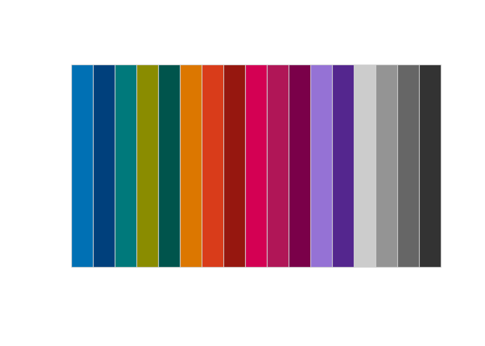
zhpal$zhblue[1] "#407B9F" "#3F8AB4" "#3F98CC" "#5FA9D3" "#7FB9DD" "#9FCBE5" "#BFDCED"display(zhpal$zhblue)
Plots erstellen mit Kanton ZH Vorgaben
ggplot(
data=Sondierbohrungen,
mapping=aes(x=Jahr, y=Bohrtiefe_m, fill = Gemeinde))+
geom_col()+
scale_fill_colorblind() +
scale_y_continuous(limits = c(0, 30))+
labs(title = "Bohrbilanz nach Gemeinde und Jahr",
subtitle = "",
x = "Jahr Bohrungsausführung",
y = "Tiefe in Meter",
caption = "Daten: https://geo.zh.ch/s/a76cc86c-72f6-4bdd-89de-b852c3b0f750",
fill = "Gemeinde") +
theme_minimal(base_size = 12) +
theme(panel.grid.major.x = element_blank(),
axis.text.x = element_text(angle = 10,
vjust = 1.5))Warning: `scale_fill_colorblind()` was deprecated in ggthemes 5.2.0.Warning: Removed 116 rows containing missing values or values outside the scale range
(`geom_col()`).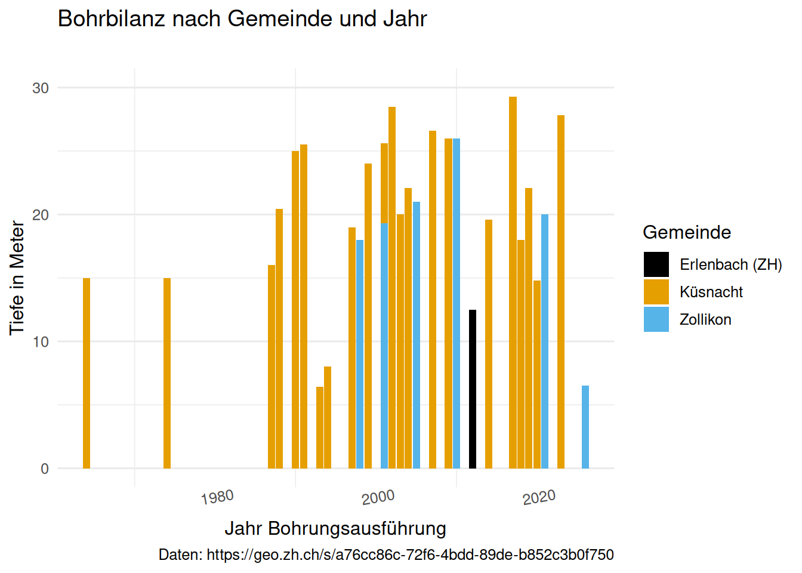
ggplot(
data=Sondierbohrungen,
mapping=aes(x=Jahr, y=Bohrtiefe_m, fill = Gemeinde))+
geom_col(na.rm = TRUE)+
scale_fill_colorblind() +
scale_x_continuous(limits = c(1960,2035)) +
scale_y_continuous(limits = c(1, 25.5))+
labs(title = "Bohrbtiefe nach Gemeinde und Jahr",
subtitle = "",
x = "Jahr Bohrungsausführung",
y = "Tiefe in Meter",
caption = "Daten: https://geo.zh.ch/s/a76cc86c-72f6-4bdd-89de-b852c3b0f750",
fill = "Gemeinde") +
theme_minimal(base_size = 12) +
theme(panel.grid.major.x = element_blank(),
axis.text.x = element_text(angle = 10,
vjust = 1.5))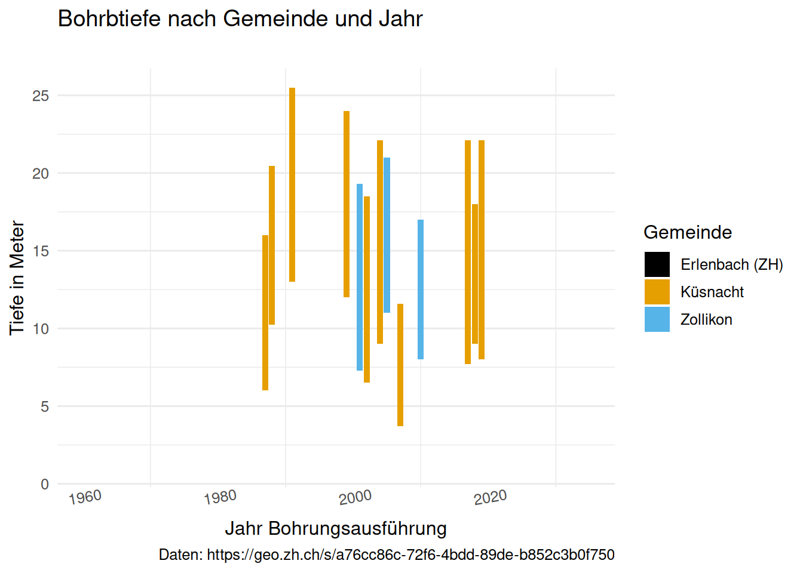
Minimum und Maximum der Jahre als Limit, 1960 bis 2026
min_Jahr <- min(Sondierbohrungen[,5], na.rm = TRUE)
max_Jahr <- max(Sondierbohrungen[,5], na.rm = TRUE)ggplot(
data=Sondierbohrungen,
mapping=aes(x=Jahr, y=Bohrtiefe_m, fill = Gemeinde))+
geom_col(na.rm = TRUE)+
scale_x_continuous(limits = c(min_Jahr, max_Jahr)) +
scale_y_continuous(limits = c(0.5, 25.5))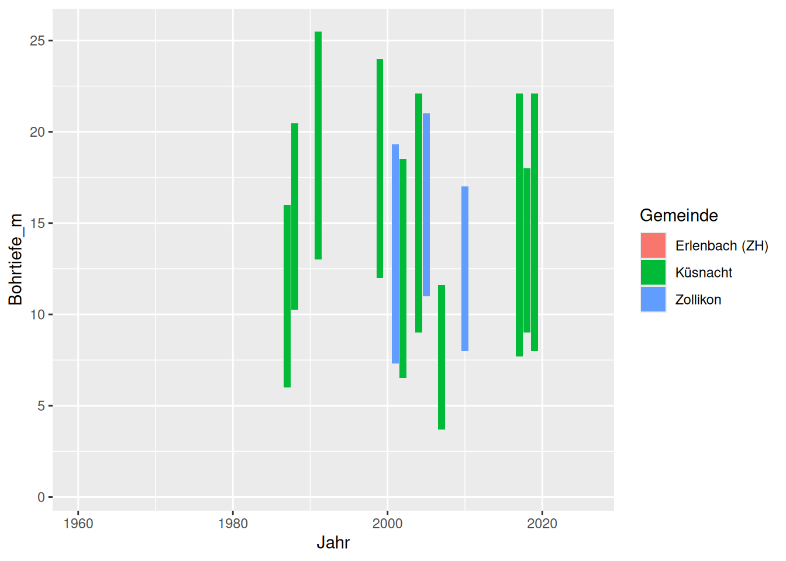
Min, Max der Bohrtiefen. 0 bis 2692.5 Meter
min_bt <- min(Sondierbohrungen[,6], na.rm = TRUE)
max_bt <- max(Sondierbohrungen[,6], na.rm = TRUE)Zeile 154 hat eine 0. Deshalb erscheint Erlenbach nicht? Ersetzen durch NA
Sondierbohrungen<-
Sondierbohrungen |>
mutate(Bohrtiefe_m = na_if(Bohrtiefe_m, 0))Erlenbach erscheint immer noch nicht
ggplot(
data=Sondierbohrungen,
mapping=aes(x=Jahr, y=Bohrtiefe_m, fill = Gemeinde))+
geom_col(na.rm = TRUE)+
scale_fill_colorblind() +
scale_x_continuous(limits = c(1960,2035)) +
scale_y_continuous(limits = c(1, 25.5))+
labs(title = "Bohrbtiefe nach Gemeinde und Jahr",
subtitle = "",
x = "Jahr Bohrungsausführung",
y = "Tiefe in Meter",
caption = "Daten: https://geo.zh.ch/s/a76cc86c-72f6-4bdd-89de-b852c3b0f750",
fill = "Gemeinde") +
theme_minimal(base_size = 12) +
theme(panel.grid.major.x = element_blank(),
axis.text.x = element_text(angle = 10,
vjust = 1.5))
Sondierbohrungen# A tibble: 170 × 10
Gemeinde east_coordinate_lv95 north_coordinate_lv95 Terrainkote_m Jahr
<chr> <dbl> <dbl> <dbl> <dbl>
1 Zollikon 2686211 1243082 476. 2026
2 Zollikon 2686593 1244955 534. 2001
3 Zollikon 2685614 1244746 462. 2021
4 Zollikon 2685156 1244389 407. 2021
5 Zollikon 2685169 1244376 407. 2021
6 Zollikon 2685182 1244398 408. 2021
7 Zollikon 2688029 1244464 611. 1998
8 Zollikon 2688006 1244547 606. 1998
9 Zollikon 2687904 1244585 605. 2010
10 Zollikon 2687858 1244599 604. 2010
# ℹ 160 more rows
# ℹ 5 more variables: Bohrtiefe_m <dbl>, Felstiefe <dbl>,
# Grundwasserspiegelkote <dbl>, Flurabstand_m <dbl>, Firma <chr>Min, max Grundwasserspiegelkote 12.3 Meter bis 656.28 Meter
min_GWS <- min(Sondierbohrungen[,8], na.rm = TRUE)
max_GWS <- max(Sondierbohrungen[,8], na.rm = TRUE)Korrektur. 12.3 ist ein Fehler. Falscher Wert in der Datenbank. Zeile 155, Spalte 8 ist GWS Spiegelkote, Spalte 9 Flurabstand
Sondierbohrungen [155, 8] <-666.7
Sondierbohrungen [155, 9] <-12.3404.15 bis 666.7 Meter
min_GWS <- min(Sondierbohrungen[,8], na.rm = TRUE)
max_GWS <- max(Sondierbohrungen[,8], na.rm = TRUE)Koord<-
Sondierbohrungen |>
arrange(desc(east_coordinate_lv95), desc(north_coordinate_lv95))Grundwasserspiegelkote, Jahr und Gemeinde
ggplot(
data=Koord,
mapping=aes(x=Grundwasserspiegelkote, y=Jahr, colour = Gemeinde)
)+
geom_point() +
geom_smooth(method = "lm")`geom_smooth()` using formula = 'y ~ x'Warning: Removed 29 rows containing non-finite outside the scale range
(`stat_smooth()`).Warning: Removed 29 rows containing missing values or values outside the scale range
(`geom_point()`).ggplot(
data=Sondierbohrungen,
mapping=aes(x=Grundwasserspiegelkote, y=east_coordinate_lv95, colour = Gemeinde)
)+
geom_point() +
geom_smooth(method = "lm")`geom_smooth()` using formula = 'y ~ x'Warning: Removed 28 rows containing non-finite outside the scale range
(`stat_smooth()`).Warning: Removed 28 rows containing missing values or values outside the scale range
(`geom_point()`).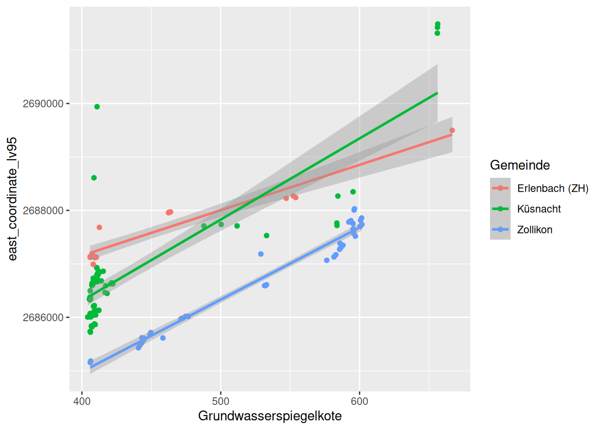
ggplot(
data=Koord,
mapping=aes(x=Grundwasserspiegelkote, y=north_coordinate_lv95, colour = Gemeinde)
)+
geom_point() +
geom_smooth(method = "lm")`geom_smooth()` using formula = 'y ~ x'Warning: Removed 28 rows containing non-finite outside the scale range
(`stat_smooth()`).Warning: Removed 28 rows containing missing values or values outside the scale range
(`geom_point()`).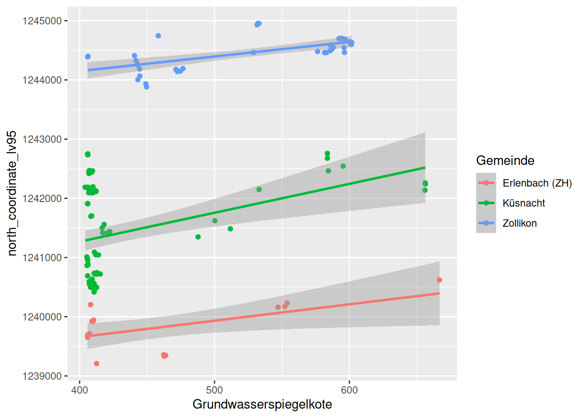
ggplot(data=Sondierbohrungen,
mapping=aes(x=Grundwasserspiegelkote, y=Jahr, colour = Gemeinde)
)+
geom_point() +
geom_smooth(method = "lm")`geom_smooth()` using formula = 'y ~ x'Warning: Removed 29 rows containing non-finite outside the scale range
(`stat_smooth()`).Warning: Removed 29 rows containing missing values or values outside the scale range
(`geom_point()`).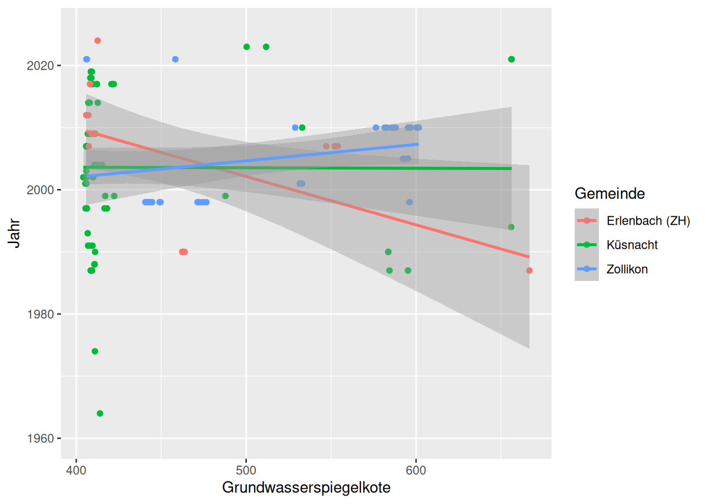
ggplot(data = Sondierbohrungen,
mapping = aes(x = Grundwasserspiegelkote,
y = Jahr,
color = Gemeinde,
shape = Gemeinde)) +
geom_point(size = 1, alpha = 0.7)+
facet_wrap(Gemeinde ~ Bohrtiefe_m)Warning: Removed 29 rows containing missing values or values outside the scale range
(`geom_point()`).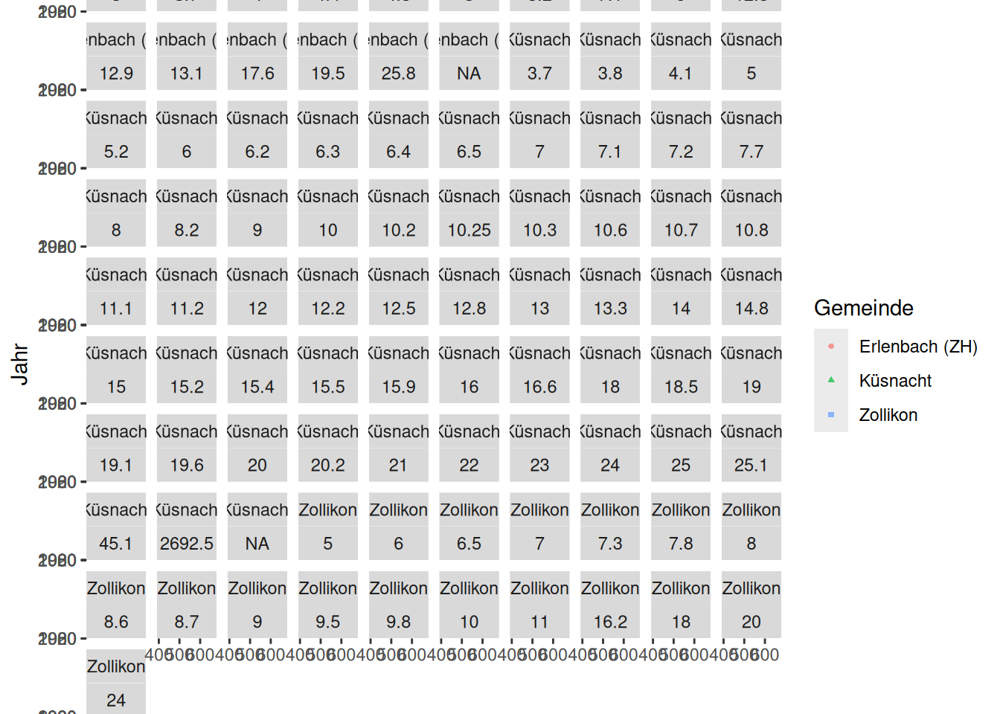
Welche Gemeinde hat die meisten Sondierungen
ggplot(data = Sondierbohrungen,
mapping = aes(x = Gemeinde,
fill = Gemeinde))+
geom_bar()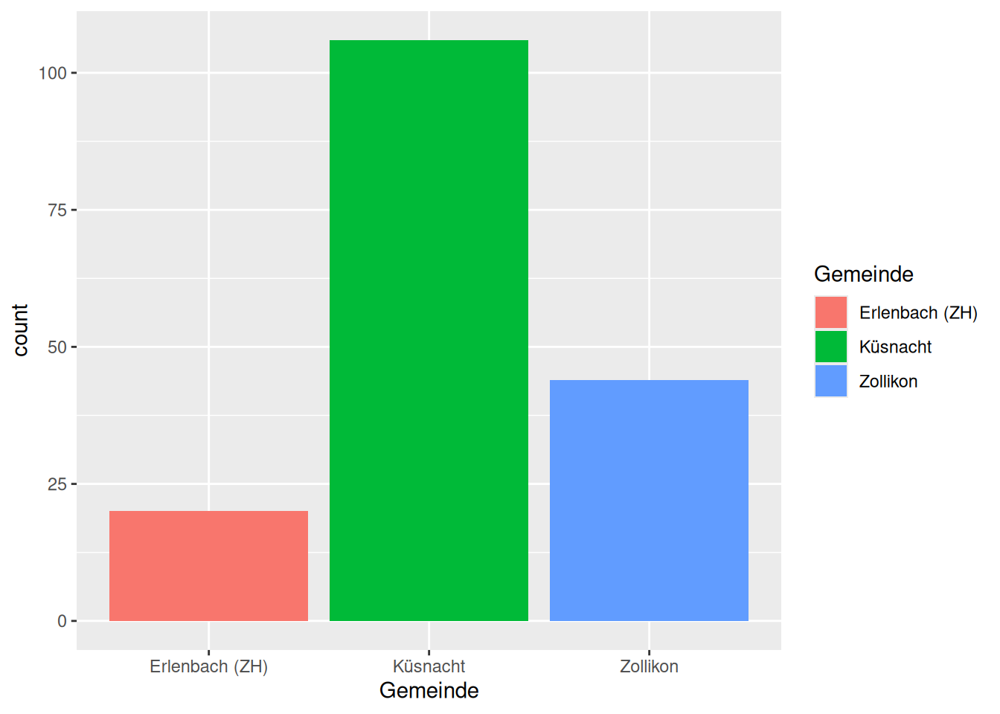
Mean Grundwasserspiegelkote
Sondierbohrungen_zusammenfassung_Grundwasserspiegelkote_Gemeinde <- Sondierbohrungen |>
group_by(Gemeinde, Jahr) |>
summarise(GWS = mean(Grundwasserspiegelkote, na.rm=TRUE))`summarise()` has regrouped the output.
ℹ Summaries were computed grouped by Gemeinde and Jahr.
ℹ Output is grouped by Gemeinde.
ℹ Use `summarise(.groups = "drop_last")` to silence this message.
ℹ Use `summarise(.by = c(Gemeinde, Jahr))` for per-operation grouping
(`?dplyr::dplyr_by`) instead.Grundwasserspiegel nach Jahr und Gemeinde
Sondierbohrungen_zusammenfassung_Grundwasserspiegelkote_Gemeinde# A tibble: 39 × 3
# Groups: Gemeinde [3]
Gemeinde Jahr GWS
<chr> <dbl> <dbl>
1 Erlenbach (ZH) 1987 667.
2 Erlenbach (ZH) 1990 463.
3 Erlenbach (ZH) 2007 515.
4 Erlenbach (ZH) 2009 410.
5 Erlenbach (ZH) 2012 406.
6 Erlenbach (ZH) 2017 408.
7 Erlenbach (ZH) 2024 413.
8 Küsnacht 1960 NaN
9 Küsnacht 1964 414
10 Küsnacht 1974 411
# ℹ 29 more rowsAnzahl der Sondierungen pro Gemeinde und mean GWS
x<-
Sondierbohrungen |>
group_by(Gemeinde) |>
summarise(
anzahl = n(),
GWS = mean(Grundwasserspiegelkote, na.rm=TRUE)
)x# A tibble: 3 × 3
Gemeinde anzahl GWS
<chr> <int> <dbl>
1 Erlenbach (ZH) 20 459.
2 Küsnacht 106 431.
3 Zollikon 44 531.Anzahl der Sondierungen pro Gemeinde und mean GWS pro Jahr
y<-
Sondierbohrungen |>
group_by(Gemeinde, Jahr) |>
summarise(
GWS = mean(Grundwasserspiegelkote, na.rm=TRUE)
)`summarise()` has regrouped the output.
ℹ Summaries were computed grouped by Gemeinde and Jahr.
ℹ Output is grouped by Gemeinde.
ℹ Use `summarise(.groups = "drop_last")` to silence this message.
ℹ Use `summarise(.by = c(Gemeinde, Jahr))` for per-operation grouping
(`?dplyr::dplyr_by`) instead.y# A tibble: 39 × 3
# Groups: Gemeinde [3]
Gemeinde Jahr GWS
<chr> <dbl> <dbl>
1 Erlenbach (ZH) 1987 667.
2 Erlenbach (ZH) 1990 463.
3 Erlenbach (ZH) 2007 515.
4 Erlenbach (ZH) 2009 410.
5 Erlenbach (ZH) 2012 406.
6 Erlenbach (ZH) 2017 408.
7 Erlenbach (ZH) 2024 413.
8 Küsnacht 1960 NaN
9 Küsnacht 1964 414
10 Küsnacht 1974 411
# ℹ 29 more rowsGWS pro Gemeinde als Boxplot
ggplot(data = Sondierbohrungen,
mapping = aes(x = Gemeinde,
y = Grundwasserspiegelkote,
fill = Gemeinde)) +
geom_boxplot()Warning: Removed 28 rows containing non-finite outside the scale range
(`stat_boxplot()`).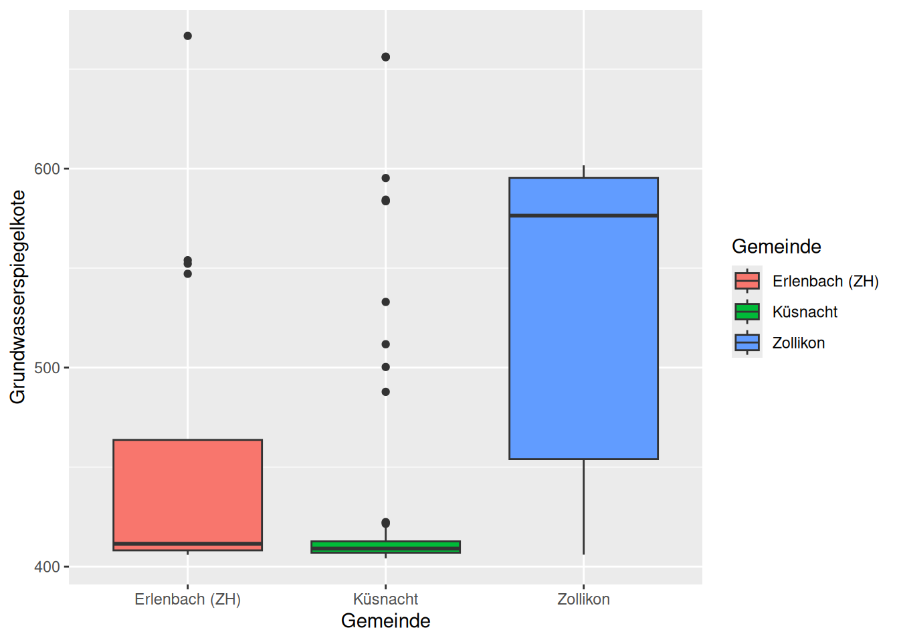
library(readr)
library(dplyr)Wieviele Sondierungen pro Jahr und Gemeinde
Sondierbohrungen |>
group_by(Gemeinde, Jahr) |>
summarise(count = n())`summarise()` has regrouped the output.
ℹ Summaries were computed grouped by Gemeinde and Jahr.
ℹ Output is grouped by Gemeinde.
ℹ Use `summarise(.groups = "drop_last")` to silence this message.
ℹ Use `summarise(.by = c(Gemeinde, Jahr))` for per-operation grouping
(`?dplyr::dplyr_by`) instead.# A tibble: 39 × 3
# Groups: Gemeinde [3]
Gemeinde Jahr count
<chr> <dbl> <int>
1 Erlenbach (ZH) 1987 1
2 Erlenbach (ZH) 1990 4
3 Erlenbach (ZH) 2007 6
4 Erlenbach (ZH) 2009 3
5 Erlenbach (ZH) 2012 3
6 Erlenbach (ZH) 2017 2
7 Erlenbach (ZH) 2024 1
8 Küsnacht 1960 1
9 Küsnacht 1964 1
10 Küsnacht 1974 1
# ℹ 29 more rowsAnzahl Bohrungen unter 40 Metern
Sondierbohrungen |>
filter(Bohrtiefe_m < 40) |>
group_by(Gemeinde, Jahr) |>
summarise(count = n())`summarise()` has regrouped the output.
ℹ Summaries were computed grouped by Gemeinde and Jahr.
ℹ Output is grouped by Gemeinde.
ℹ Use `summarise(.groups = "drop_last")` to silence this message.
ℹ Use `summarise(.by = c(Gemeinde, Jahr))` for per-operation grouping
(`?dplyr::dplyr_by`) instead.# A tibble: 37 × 3
# Groups: Gemeinde [3]
Gemeinde Jahr count
<chr> <dbl> <int>
1 Erlenbach (ZH) 1987 1
2 Erlenbach (ZH) 1990 4
3 Erlenbach (ZH) 2007 6
4 Erlenbach (ZH) 2009 3
5 Erlenbach (ZH) 2012 3
6 Erlenbach (ZH) 2017 2
7 Küsnacht 1964 1
8 Küsnacht 1974 1
9 Küsnacht 1987 7
10 Küsnacht 1988 3
# ℹ 27 more rowsNeue Spalte Verhältnis
Sondierbohrungen |>
mutate(ratio = Bohrtiefe_m / Grundwasserspiegelkote)# A tibble: 170 × 11
Gemeinde east_coordinate_lv95 north_coordinate_lv95 Terrainkote_m Jahr
<chr> <dbl> <dbl> <dbl> <dbl>
1 Zollikon 2686211 1243082 476. 2026
2 Zollikon 2686593 1244955 534. 2001
3 Zollikon 2685614 1244746 462. 2021
4 Zollikon 2685156 1244389 407. 2021
5 Zollikon 2685169 1244376 407. 2021
6 Zollikon 2685182 1244398 408. 2021
7 Zollikon 2688029 1244464 611. 1998
8 Zollikon 2688006 1244547 606. 1998
9 Zollikon 2687904 1244585 605. 2010
10 Zollikon 2687858 1244599 604. 2010
# ℹ 160 more rows
# ℹ 6 more variables: Bohrtiefe_m <dbl>, Felstiefe <dbl>,
# Grundwasserspiegelkote <dbl>, Flurabstand_m <dbl>, Firma <chr>, ratio <dbl>Tabelle Grundwasserspiegelkote Maximum und Minimum
summe<-
Sondierbohrungen |>
group_by(Gemeinde) |>
summarize(GWS_max = max(Grundwasserspiegelkote, na.rm = TRUE),
GWS_min = min(Grundwasserspiegelkote, na.rm = TRUE))Pro Jahr und Gemeinde mean Bohrtiefe und Grundwasserspiegel
Sondierbohrungen |>
filter(!is.na(Grundwasserspiegelkote), !is.na(Bohrtiefe_m)) |>
group_by(Gemeinde, Jahr) |>
summarize(GWS_mean = mean(Grundwasserspiegelkote),
Bohrtiefe_mean = mean(Bohrtiefe_m),
count = n())`summarise()` has regrouped the output.
ℹ Summaries were computed grouped by Gemeinde and Jahr.
ℹ Output is grouped by Gemeinde.
ℹ Use `summarise(.groups = "drop_last")` to silence this message.
ℹ Use `summarise(.by = c(Gemeinde, Jahr))` for per-operation grouping
(`?dplyr::dplyr_by`) instead.# A tibble: 35 × 5
# Groups: Gemeinde [3]
Gemeinde Jahr GWS_mean Bohrtiefe_mean count
<chr> <dbl> <dbl> <dbl> <int>
1 Erlenbach (ZH) 1987 667. 25.8 1
2 Erlenbach (ZH) 1990 463. 4.62 4
3 Erlenbach (ZH) 2007 515. 6.38 4
4 Erlenbach (ZH) 2009 410. 11.5 3
5 Erlenbach (ZH) 2012 406. 13.7 3
6 Erlenbach (ZH) 2017 408. 6.15 2
7 Küsnacht 1964 414 15 1
8 Küsnacht 1974 411 15 1
9 Küsnacht 1987 469. 16.4 6
10 Küsnacht 1988 411. 10.4 3
# ℹ 25 more rowsAnzahl GWS Messungen
Sondierbohrungen |>
count(Gemeinde, Grundwasserspiegelkote)# A tibble: 138 × 3
Gemeinde Grundwasserspiegelkote n
<chr> <dbl> <int>
1 Erlenbach (ZH) 406. 1
2 Erlenbach (ZH) 406. 1
3 Erlenbach (ZH) 407. 1
4 Erlenbach (ZH) 407. 1
5 Erlenbach (ZH) 408. 2
6 Erlenbach (ZH) 409. 1
7 Erlenbach (ZH) 410. 1
8 Erlenbach (ZH) 410. 1
9 Erlenbach (ZH) 413. 1
10 Erlenbach (ZH) 462. 1
# ℹ 128 more rowsKanton ZH Farben packages installieren
library(devtools)
# devtools::install_github("statistikZH/statR")
install_github("statistikZH/statR")Skipping install of 'statR' from a github remote, the SHA1 (a3d1ece0) has not changed since last install.
Use `force = TRUE` to force installation1[1] 1library(statR)
1[1] 1install.packages("pak")Installing package into '/cloud/lib/x86_64-pc-linux-gnu-library/4.6'
(as 'lib' is unspecified)library(statR)
display.statcol.all()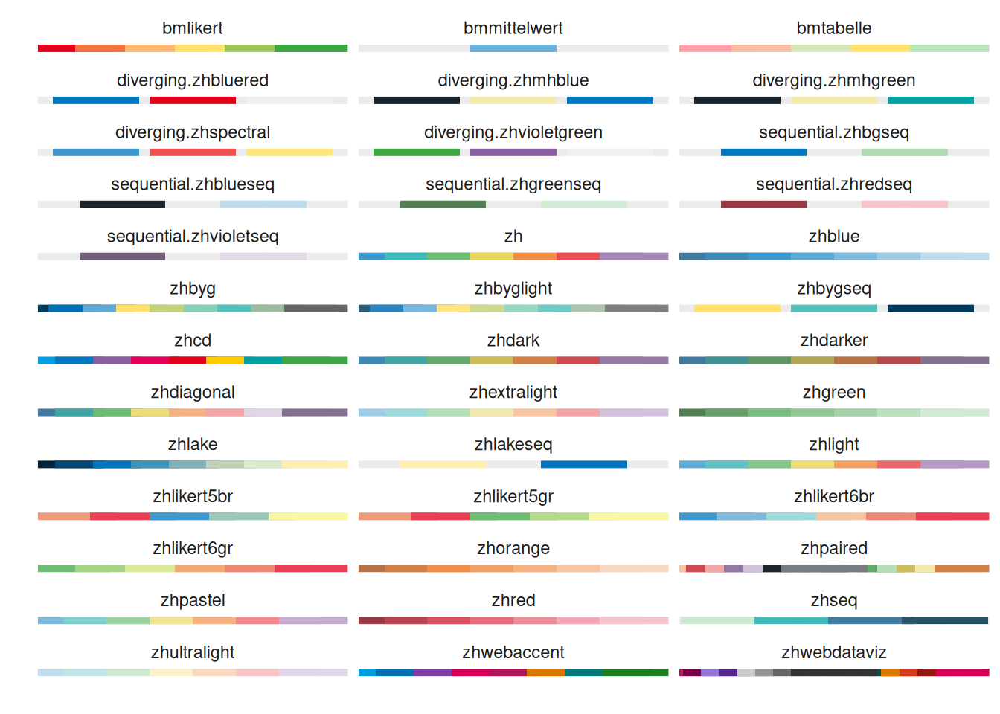
pak::pak("statistikZH/statR") → Package library at '/cloud/lib/x86_64-pc-linux-gnu-library/4.6'.✔ All system requirements are already installed. ℹ No downloads are needed✔ 1 pkg + 32 deps: kept 33 [1.6s]zhpal$zhwebdataviz [1] "#0070B4" "#00407C" "#00797B" "#8A8C00" "#00544C" "#DC7700" "#D93C1A"
[8] "#96170F" "#D40053" "#B01657" "#7A0049" "#9572D5" "#54268E" "#CCCCCC"
[15] "#949494" "#666666" "#333333"display(zhpal$zhwebdataviz)
zhpal$zhblue[1] "#407B9F" "#3F8AB4" "#3F98CC" "#5FA9D3" "#7FB9DD" "#9FCBE5" "#BFDCED"display(zhpal$zhblue)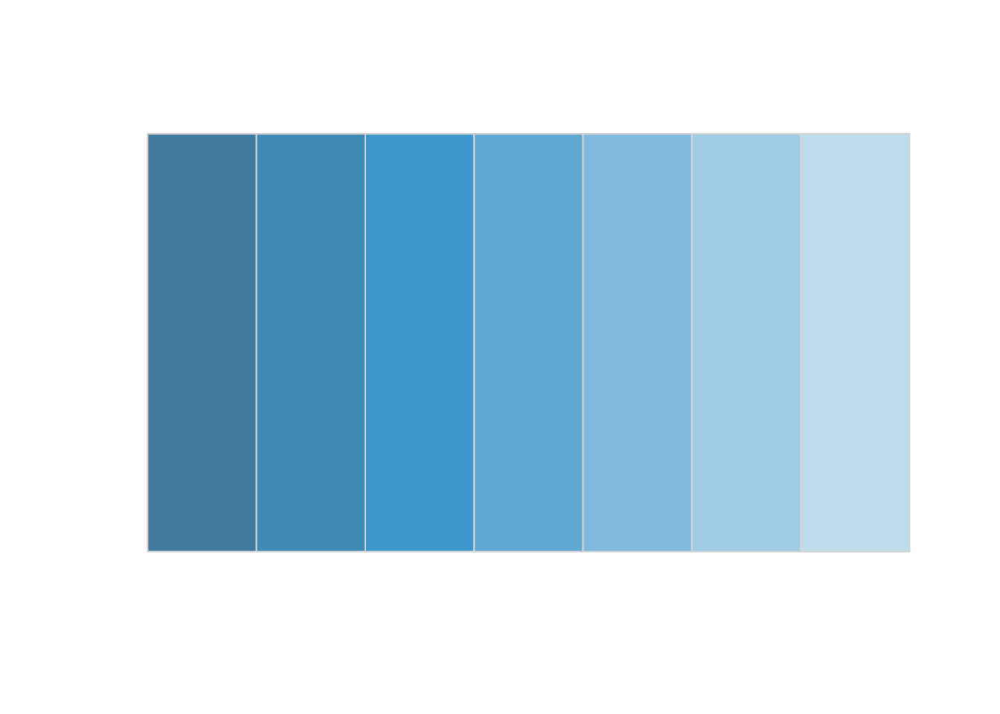
ggplot(Sondierbohrungen, aes(x = Jahr, y = Bohrtiefe_m, fill = Gemeinde)) +
geom_col(fill = zhpal$zhblue[1], width = 0.8) +
labs(x = "Jahr",
y = NULL,
title = "Bohrtiefe und Jahr der Ausführung, Zürich",
subtitle = "Jahrgänge 1960 bis 2030") +
theme_stat() +
theme(axis.text.y = element_blank(),
panel.grid.major.y = element_blank())Warning: Removed 3 rows containing missing values or values outside the scale range
(`geom_col()`).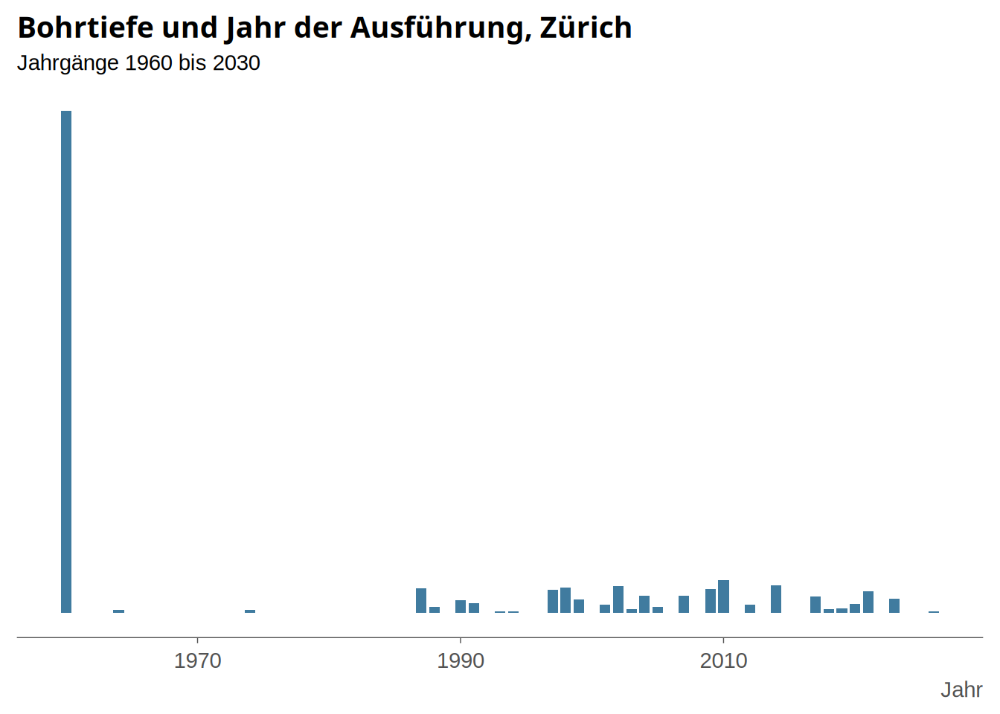
Bohrtiefe und Ausführungsjahr
ggplot(
data=Sondierbohrungen,
mapping=aes(x=Bohrtiefe_m, y=Jahr, colour = Gemeinde)
)+
geom_point(na.rm=TRUE) +
coord_cartesian(xlim = c(0, 75))+
geom_smooth(method = "lm")`geom_smooth()` using formula = 'y ~ x'Warning: Removed 3 rows containing non-finite outside the scale range
(`stat_smooth()`).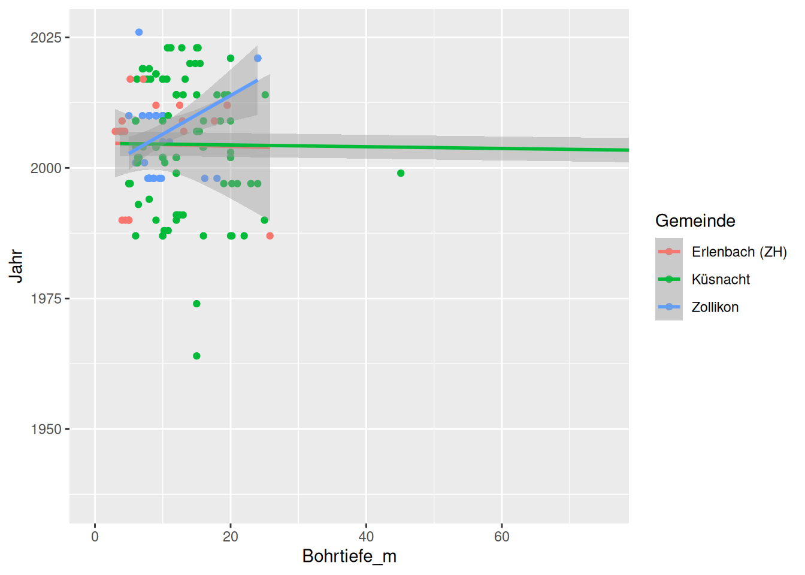
summary(Sondierbohrungen) Gemeinde east_coordinate_lv95 north_coordinate_lv95 Terrainkote_m
Length :170 Min. :2685156 Min. :1239210 Min. :407.2
N.unique : 3 1st Qu.:2686207 1st Qu.:1240697 1st Qu.:411.7
N.blank : 0 Median :2686730 Median :1241952 Median :422.2
Min.nchar: 8 Mean :2686996 Mean :1242096 Mean :477.6
Max.nchar: 14 3rd Qu.:2687640 3rd Qu.:1243682 3rd Qu.:581.0
Max. :2691486 Max. :1244955 Max. :679.0
Jahr Bohrtiefe_m Felstiefe Grundwasserspiegelkote
Min. :1960 Min. : 3.00 Min. : 2.60 Min. :404.1
1st Qu.:1998 1st Qu.: 8.00 1st Qu.: 8.00 1st Qu.:407.5
Median :2007 Median : 10.00 Median :13.90 Median :412.1
Mean :2005 Mean : 27.49 Mean :14.16 Mean :462.1
3rd Qu.:2012 3rd Qu.: 15.00 3rd Qu.:19.10 3rd Qu.:524.6
Max. :2026 Max. :2692.50 Max. :43.96 Max. :666.7
NAs :1 NAs :2 NAs :145 NAs :28
Flurabstand_m Firma
Min. : 0.870 Length :170
1st Qu.: 2.550 N.unique : 32
Median : 3.250 N.blank : 0
Mean : 4.575 Min.nchar: 4
3rd Qu.: 4.947 Max.nchar: 54
Max. :56.680 NAs : 1
NAs :28 summary(is.na(Sondierbohrungen$column_name))Warning: Unknown or uninitialised column: `column_name`. Mode
logical library(dplyr)
Sondierbohrungen |>
filter(!is.na(Jahr)) |>
ggplot(aes(x = Jahr, color = Gemeinde)) + geom_density()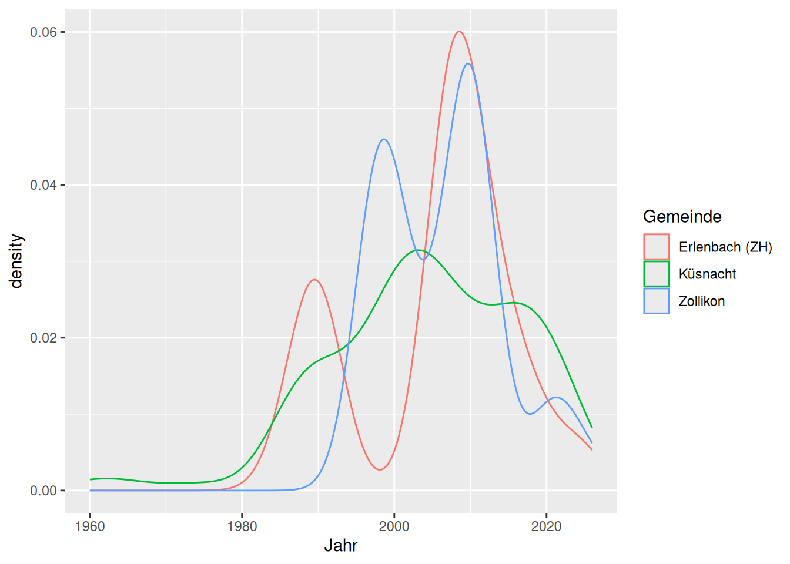
#Sondierbohrungen |>
# filter(!is.na(Jahr) |>
#ggplot(aes(x = Jahr, y = Grundwasserspiegelkote)) +
#geom_point(aes(color = Gemeinde, shape = Gemeinde)) +
# facet_wrap(~Gemeinde))
#ggsave(filename = "GWS Gemeinde.png")library(scales)
Attaching package: 'scales'The following object is masked from 'package:purrr':
discardThe following object is masked from 'package:readr':
col_factorggplot(
data=Sondierbohrungen_zusammenfassung_Grundwasserspiegelkote_Gemeinde,
mapping=aes(x=GWS, y=Jahr, colour = Gemeinde))+
geom_point()+
geom_smooth(method = "lm")+
scale_y_continuous(breaks = seq(300, 700, by = 20)) `geom_smooth()` using formula = 'y ~ x'Warning: Removed 4 rows containing non-finite outside the scale range
(`stat_smooth()`).Warning: Removed 4 rows containing missing values or values outside the scale range
(`geom_point()`).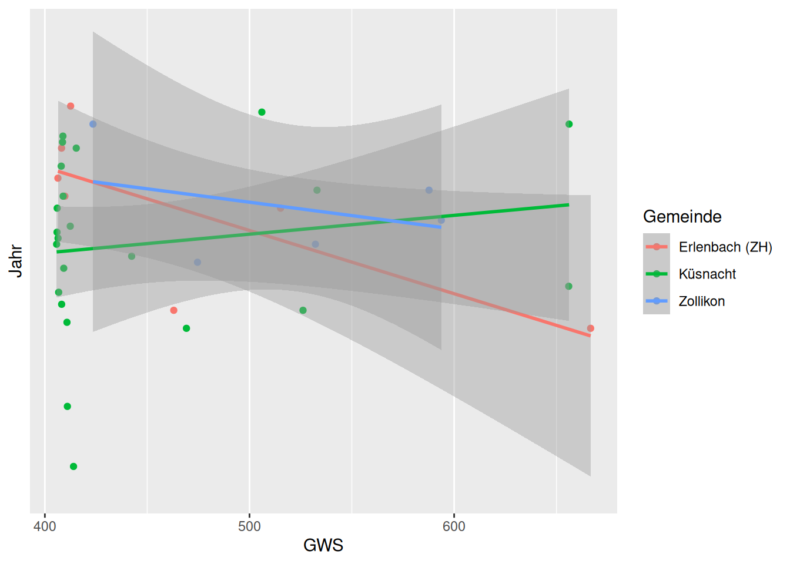
Packages für Koordianten und Maps
Installing package into '/cloud/lib/x86_64-pc-linux-gnu-library/4.6'
(as 'lib' is unspecified)
Installing package into '/cloud/lib/x86_64-pc-linux-gnu-library/4.6'
(as 'lib' is unspecified)Linking to GEOS 3.12.1, GDAL 3.8.4, PROJ 9.4.0; sf_use_s2() is TRUE
Attaching package: 'maps'The following object is masked from 'package:purrr':
mapterra 1.9.27
Attaching package: 'terra'The following object is masked from 'package:scales':
rescaleThe following object is masked from 'package:tidyr':
extractTo access larger datasets in this package, install the spDataLarge
package with: `install.packages('spDataLarge',
repos='https://nowosad.github.io/drat/', type='source')`